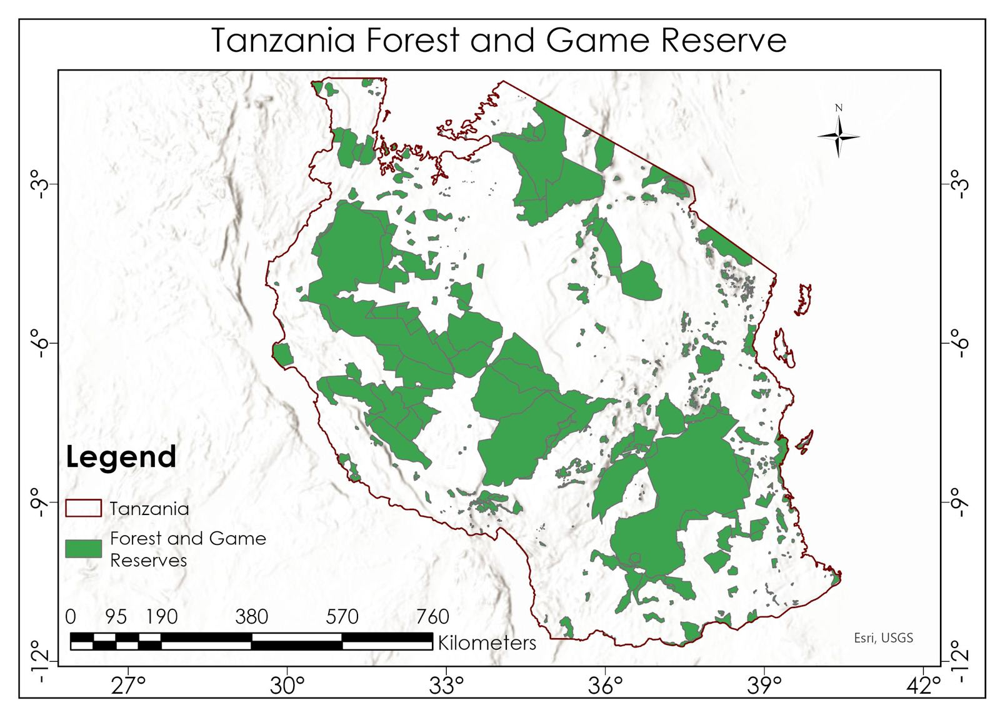

See how Tanzania's forests are doing
Pick a protected area, choose a layer and a date range, and get a map, statistics and a trend chart for that forest only.
Open the appHow it works
What you can measure
NDVI
Vegetation greennessShows how green and dense the vegetation is. Works with satellite images back to 1972.
EVI
Enhanced vegetationLike NDVI, but better in very dense forest where NDVI levels off.
NBR
Burn and forest conditionHighlights burned or stressed areas, such as after a fire.
MNDWI
Water and moistureFinds open water, wet ground and dry surfaces.
Soil nutrients
Nitrogen, phosphorus, potassiumTopsoil (0–20 cm) maps at 30 m resolution from iSDAsoil.
Land cover
ESA WorldCover, 10 mTree cover, shrubland, grassland, cropland, water and more, with the area of each in hectares.
Use it in four steps
- Type a forest name or pick one from the list.
- Choose an index, soil layer or land cover.
- For indices, choose a sensor, a date range and a cloud-cover limit.
- Click Run to see the map, class areas and chart.